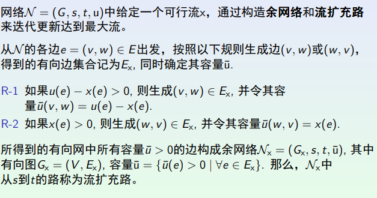
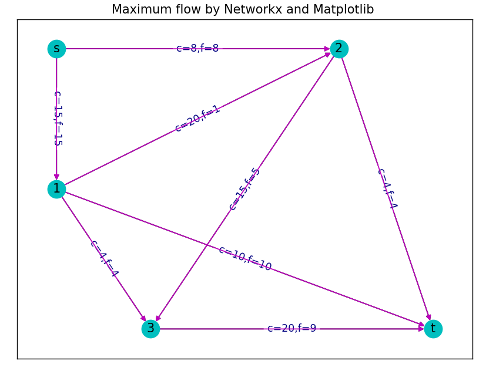

学院：数学概率与统计系
学号：PB20010370
姓名：潘子瑞
1.科学技术原理
1.1.问题引入：
网络最优化问题 是一类特殊的组合最优化问题。应用图论理论，通过网络的拓扑结构及其性质 ，对网络进行研究，并且以计算机算法寻求网络中的最短路径、最大流值、最小成本等。
这类问题广泛应用于解决不同领域中的各种问题，如生产、分配、项目计划、厂址选择、资源管理和财务策划等等。 网络最优化问题类型主要包括： 最小费用流问题、最大流问题、最短路问题、最小支撑树问题、货郎担问题和中国邮路问题等。 这里，我将挑选网络最优化问题中最具有代表性的几类问题进行讲解。
1.2.问题介绍：
1.2.1最短路径问题
直观上看，它描述的是如何求解两点之间的最短距离，如图（1）中A,B之间的最短距离为6；A，C之间最短距离为11。
这类问题是最基本的网络最优化问题，也是最简单的。
用于解决最短路径问题的常用方法有两种:狄克斯特拉（Dijkstra）算法、弗洛伊德（Floyd）算法。二者的区别在于Dijkstra算法主要用于解决从初始点到各个点位的最短路径问题，而Floyd算法 研究的是任意两结点之间的最短路径。
1.2.2最大流问题
在介绍最大流问题前，我们先引入图的相关定义，见图（2）

最大流问题，是网络流理论研究的一个基本问题，求网络中一个可行流f*，使其流量v(f)(一个图的流量定义为从源点s 流出的流量值或者输入汇点t的流量值)达到最大， 这种流f称为最大流，这个问题称为(网络)最大流问题。 最大流问题是一个特殊的线性规划问题，就是在容量网络中，寻找流量最大的可行流。
最大流问题的数学表述如下:

1.2.3最小成本流问题
最小成本流可以看成最短路径问题和最大流问题的结合，它在图的每条边上加入了成本这一概念， 考虑在流值固定的(不超过网络最大流)的条件下，使总成本达到最小的流。
最小成本流问题的数学表述如下:

1.2.4最小成本最大流问题
最小成本最大流问题是特殊的最小成本流问题，考虑的是在流值等于网络最大流的条件下，使总成本达到最小的流。
2.算法及代码介绍
2.1最短路径问题算法
最短路径问题算法一般有两种，狄克斯特拉（Dijkstra）算法、弗洛伊德（Floyd）算法。
2.1.1狄克斯特拉（Dijkstra）算法
这一算法主要利用了最短路径的最优子路径性质， 即如果S(i,j)={Vi…Vk…Vs…Vj}是从顶点i到j的最短路径，m和n是这条路径上的一个中间顶点，那么S(m,n)必定是从m到n的最短路径。
利用上述性质，Dijikstra算法描述如下：
假设存在N=<'V,E'>，源顶点为V0，S={V0},distance[i]记录V0到i的最短距离，matrix[i][j]记录从i到j的边的权值，即两点之间的距离。
1）从V-S中选择使dist[i]值最小的顶点i，将i加入到U中；
2）更新与i直接相邻顶点的dist值。dist[j]=min{dist[j],dist[i]+matrix[i][j]}
3）直到S=V，所有顶点都包含进来了，算法停止。
Dijkstra算法代码如下：
2.1.2弗洛伊德（Floyd）算法
与Dijkstra算法相比，Floyd算法是直接对邻接矩阵进行操作，代码更加简洁，但往往时间复杂度比Dijkstra算法大，不适合处理大规模数据。
Floyd算法描述如下:
1，构建邻接矩阵A。(A[i][k]表示从i到k的距离，若初始时没有则记为正无穷)
2，对于每一对顶点 u 和 v，看看是否存在一个顶点 w 使得从 u 到 w 再到 v 比已知的路径更短。如果是更新它。
即A[j][k] = min(A[j][i] + A[i][k],A[j][k])
Floyd算法代码如下：
利用性能分析工具line_profiler我们也可已看出Dijkstra算法与Floyd算法的区别，Floyd算法虽然代码更加简洁，但往往时间复杂度较高：
Dijkstra算法:

Floyd算法:

2.2最大流问题算法
引入余网络和流扩充路的定义，通过判断余网络是否有流扩充路来判断是否达到最大流。 当余网络中没有流扩充路时，该流即达到最大流值。
最大流问题算法代码如下：
2.3最小成本流问题算法
由于最小成本流问题最小成本最大流问题算法函数较复杂，我们用调用ortools来解决这两个问题
ortools库是一款非常强大的用于运筹优化的开源软件套件，这里我附上了ortools官网：
最小成本流问题算法代码如下：
2.4最小成本最大流问题算法：
3.创新性描述
1.由于将来使用过程中可能遇到一些数量较大的数据，所以上述算法有些采用了读取文件的输入方式
2.利用Matplotlib和networkx绘图
Matplotib和networkx可用来绘制图像使最大流、最小成本流等问题的解更直观，下面以最大流问题为例：
运行结果:
4.运行注意事项
1.注意安装所需要的库，本大作业程序需要ortools、Matplotlib、networkx等。
使用者可先用 pip list 查询已安装的库是否包含上述。若未安装，则可在cmd中直接输入对应指令:
ortools安装：python -m pip install --upgrade --user ortools
matplotlib安装：python -m pip install matplotlib
networkx安装：pip install networkx
2注意调试代码：输入邻接矩阵的时候需要一行一行输入，元素之间用空格隔开，行之间用转行符隔开。
以上代码在vs_code中均能跑出对应结果。
5.学习收获和心得
5.1学习收获：
这学期通过学习python科学计算这门课，我初步掌握了python语言的一些基本应用，也体会到python语言简单易懂、简练清晰的特点。 此外，通过调用各种库，python也能用于解决复杂的数学问题，这与我专业相对应。独自完成大作业也让我检索知识的能力得到提升， 在实践中提升了对python语言的熟练程度。
5.2学习心得：
在学习这么课之前，我对用计算机解决数学问题知之甚少，然而通过一学期的学习，我看到了计算机与数学紧密联系的特点。这学期我选 的数理统计和运筹学两门课都与罗老师上课讲的内容相呼应，本次大作业也是用python解决运筹学中的经典问题。在今后，我也会逐步了解 python中多种多样的库，并将其应用在解决具体的数学问题上。
6.参考文献
1.Python科学计算基础 罗奇鸣
2.运筹学讲义 杨周旺